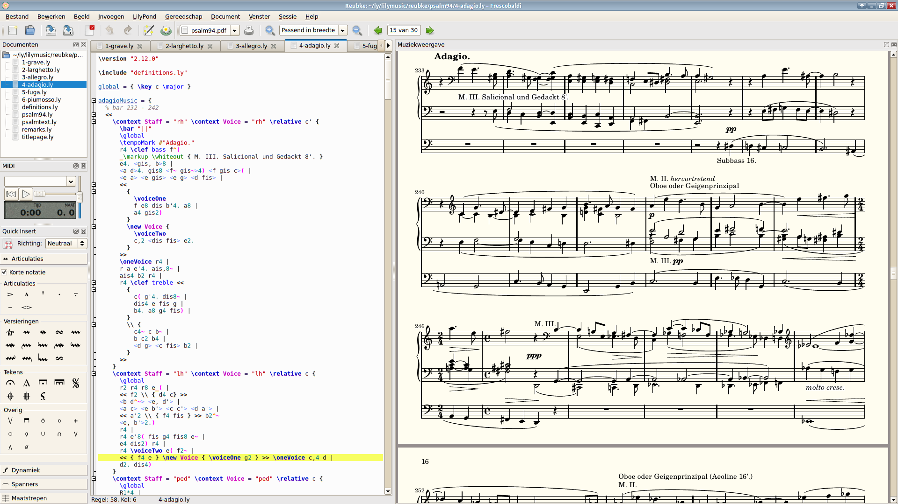
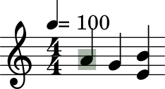
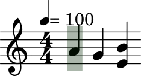

Lilyplayer
Lilyplayer plays piano music sheets.
For a very quick overview of what it does, watch the following video:

The initial goal of the project was broader than simply that. At first, it was meant to be a full-featured piano learning app.
For this project, I wanted to have the following features:
-
Real music sheets
Instead of boxes coming down the screen like synthesia, the application must display a real music sheet. The goal being to help learning piano, not to be a competitive game.
-
Users must be able to use their own music sheets
The application must not prevent the user from using any music sheet he wants. If the user bought a copy of some music sheet, he should be able to use it in the app. Therefore, the process of using a personal music sheet must be documented.
-
Only one quality tolerated for the music sheets, the very best one.
No one like to read music sheets scanned in so poor quality they appear pixelated on the screen. Also, the music sheet must look great on all screens, regarless of their dpi.
-
Practice only a subpart of the music sheet
No one learns a full music sheet right away. People practice on smaller parts at a time, and the app should let people do just that.
-
Ability to play left and right hand separately
It is often useful to practice the left and right hand part of a music separately. The app should not go into people's way of learning.
Based on these requirements, it is no surprise that I decided to base my solution on top of lilypond. In their own words:
LilyPond is a music engraving program, devoted to producing the highest-quality sheet music
possible. It brings the aesthetics of traditionally engraved music to computer printouts.
Lilypond's goal is to engrave music sheets. It takes a music description in a text format as input and generates a beautiful pdf as output. For this project this is simply not enough. To play music sheet, as showcased in the video above, more information needs to be retrieved.
The rest of the document describes the challenges that appeared during the project, and how I overtook them (or not).
Extracting when a note is played, and for how long
One of the challenge was to find out when a note is played, and for how long.
For example, on the following simple piece of music,
the program must understand that:
- at the very beginning of the song, that is at \( t=0s \), a pianist must press the
lakey (akaa). - at \( t=0.6s \), a pianist must release the
lakey and simultaneously push thesolkey down (g) - at \( t=1.2s \), a pianist must release the
solkey.
To extract these pieces of information I used two features provided by Lilypond: the
include-settings parameter, and the event listener.
include-settings let the user include a file to set some global settings. That file is included before the
score is processed. The event
listener saves music
events encountered during the music processing.
For this simple music sheet
 , the generated music events are:
, the generated music events are:
0.00000000 tempo 400.00000000
0.00000000 note 69 4 0.25000000 point-and-click 4 36
0.25000000 note 67 4 0.25000000 point-and-click 9 360.00000000 tempo 400.00000000
0.00000000 note 69 4 0.25000000 point-and-click 4 36
0.25000000 note 67 4 0.25000000 point-and-click 9 36
That is with the default event-listener. Lilypond provides a way for the user to change that so more informations can be extracted.
Out of this, we get that the tempo is 400. This 400 is almost the tempo we wrote. This 400 comes from the fact that we defined a tempo based on quarter note.
The next line says that at \( t = 0 \) the key 69 (computer code for la) is played for a quarter note.
And a quarter note after the beginning, the note 67 (key code for sol) is also played for a quarter note.
There are some basic maths involved to get from these tempo and quarter timing into time a computer can use to understand when to start playing a note, and when to stop.
One important thing to keep in mind though, is that the tempo can change during the music. These new tempos need to be taken into account when computing the time a note is played released.
Issue: tied notes
The issue with tied notes it that they are ... tied. Let's look at the following example to understand what the issue actually is:
This music sheet means that the la key must be pressed only once, and for a total of 1.2s (two quarter time)
However, when simply using the default event listener, the output we get is as follow:
0.00000000 tempo 400.00000000
0.00000000 note 69 4 0.25000000 point-and-click 4 36
0.00000000 tie
0.25000000 note 69 4 0.25000000 point-and-click 11 36
The event listener generates lines per ... event, and on the music sheet there are two notes, hence two lines. Instead of saying there should only be one key pressed, it says the key should be pressed twice, which is wrong.
My first approach to tackle this issue was to use the midi file. Lilypond can generate a midi file alongside the music sheet. As a rough estimate approximation, a midi file is akin to an mp3 file but for instrument music only. Since lilypond generates midi file that correctly describes how the music is played, it would be possible to know if a key is played longer than what is described in the events file, and thus if it is tied to the next key with the same pitch. This lead me to develop pianoterm. However some issues with this approach quickly appeared. When playing triolet for example, there is a slight difference in the timings outputed in the events file and the one in the midi files due to some rounding in the midi file. This could be easily fixed by correlating the timings, however this approach looked a bit too britle hence I looked for something else.
On the generated events above, we can see there is a tie event. We could use this as it means the previous
note has a tie attached, but sadly this is not precise enough. For example, the following two equivalents
music sheets provides the following two different events:
| music sheet | lilypond source | generated events |
|---|---|---|
| <la' sol'>4~ <la' sol'> | ||
| <sol' la'>4~ <sol' la'> |
On the first first music sheet, looking at the generated events only, it looks like the tie applies to the sol key,
whereas on the second one it looks like it applies to the la key. Truth is, both the sol and la key have a tie
attached.
For an even more contrived example, the two following distinct music sheets give the same tie events (as seen per the event-listener)
| music sheet | Source | generated events |
|---|---|---|
| <sol' la'~ mi''>4~ <sol' la' mi''>4 | ||
| <sol' la' mi''>4~ la' |
One solution to overcome this issue would be to get on each line corresponding to a note, something saying if yes or no there is a tie attached to that note.
Since Lilypond provides the option to let the user include file for global settings, I used it to extract more data from the event-listener than the default one.
That is, I created a file named event-listener.scm with this content and then called lilypond using lilypond -dinclude-settings=event-listener.scm <music-sheet.ly>.
The following table shows the new event-listener's output:
| music sheet | source | generated events |
|---|---|---|
| <la' sol'>4~ <la' sol'> | ||
| <sol' la'>4~ <sol' la'> |
Sadly, on these generated events, it says no notes have a tie attached. On a positive side we can say that at least we got some consistency here. Two different inputs which are logically equivalent now generates the same output,
One way to workaround the issue, is to rewrite the music sheet to explicitly say that each note on the chord has a tie attached instead of saying the whole chord has a tie attached. Below show the difference in writing the input, and the generated output.
| music sheet | source | generated events |
|---|---|---|
| <la'~ sol'~>4 <la' sol'> | ||
| <sol' la'~ mi''>4 la' | ||
 | <sol'~ la'~ mi''~>4 <sol' la' mi''>4 |
Now we properly get for each note if there is a tie attached to it. This solution is not satisfactory as it requires modifying by hand the input music sheet, but sadly I could not find anything better yet.
Issue: grace notes
Grace notes are musical ornaments, printed in a smaller font,
that take up no additional logical time in a measure.
The issue with grace notes is that as the quote above says, says take no additional logical time in a measure.
Let's take an example. On the following images
This means that:
- at the very beginning of the song, that is at \( t=0s \), a pianist must press the
lakey (akaa). - at \( t=0.6s \), he must release the
lakey and immediately press it again - at \( t=1.2s \), he must release the
lakey. - and somewhen after pressing the
lakey the first and second, he must quickly press and release thesolkey.
However the pressing and release time for the grace key (here sol) are not well defined.
Now let's look at the generated events:
| music sheet | lilypond source | generated events |
|---|---|---|
| la' \grace{sol'} la' |
Here we can easily see that the grace note has a starting time set to 0.25000000-0.25000000. This means the grace note must have finished by the end of the first quarter note.
On the slightly more complicated sheet below, which contains two successive grace notes,
| music sheet | lilypond source | generated events |
|---|---|---|
| la' \grace{sol' sol'} la' |
we can see they have a starting time of respectively 0.25000000-0.50000000 and 0.25000000-0.25000000.
The part before the dash is the time they have to finish. The part after can be used to know order them.
To decide when to play a grace note, and for how long, the algorithm used is quite simple, it will:
- Try to fit all successive grace note fairly distributed between the former and next "normal" notes, and use all the time in between these two notes
- prevent grace note from being played longer than (29 / 128) * (60 / 100) seconds to match the midi file produced by lylipond. If the former and next normal note are separated by a longer duration such that this maximum duration limit is hit, then grace notes are played at the end of the interval. That is, they are played right before the following next normal note.
Repeats
The idea of using the event listeners to extract when notes are played shows its limits quite well in the handling of repeats. The event listeners reports events as it sees them in the lilypond's input file. For example on the following music sheet
the la should be played twice. However the generated events are
0.00000000 tempo 400.00000000
0.00000000 note 69 4 0.25000000 point-and-click 6 37
when using the default event-listener provided by lilypond. That is the exact same events as generated
This issue here is due to the fact that the default event-listener doesn't pay attention to repeat events. I tried modifying it in several ways so that it would also report on repeat events. However I could not get what was repeated which is quite important to say the least.
if we have the following music sheet,
\repeat volta 2 { la' sol' }
We need to extract that this is equivalent to la' sol' la' sol'.
With my several attempts based only on the event-listener, I was getting the following events.:
t=0 play la' duration quarter-time
t=quarter-time play sol' duration quarter-time
t=2 * quarter-time display-repeat-bar
This is not good enough, as the same output was produced for this different music:
la' \repeat volta 2 { sol' }
which is equivalent to la' sol' sol'.
Here the solution was to unfold all repeats first.
Lilypond handle the following kind of repeats as described in its documentation:
- volta
- unfold
- percent
- tremolo
Below is a table showing the effect of each repeat type on the event-listener output
| music sheet | source | generated events |
|---|---|---|
| \repeat volta 2 { la' } | ||
| \repeat unfold 2 { la' } | ||
| \repeat percent 2 { la' } | ||
 | \repeat tremolo 2 { la' } |
{kind=link}
{kind=link}
{kind=link}
Percent and tremolo repeats are still something I can't really understand even after reading the documentation on short repeats.
Therefore I just ignore them. However, when focusing on volta and unfold repeat, we see on the generated events that unfolded repeats
produce the correct events about notes being played and when. Therefore when encoutering a volta repeat, one can simply change it to
an unfolded one to get the right music events. This leads to another issue though. It changes the generated output. One goal of the
project was to work on real music sheets, just like the ones a pianist would use. Not a simplified equivalent one. This issue will
be treated later on, in the part about matching a note to where it appears on the music sheet.
For now, to solve the current issue due to repeats, let's just replace all volta repeats by unfold repeats.
There are several ways to do so. Since lilypond's input file are simply text files, one way would be to
programmatically edit the text to replace volta by unfold everywhere it appears, and then start processing
the music sheet. Another way would be to modify lilypond so that every time it encounters a volta repeat it
would treat it just like an unfold one. I went for the second solution as it is the most stable one as
modifying the source would lead to other issues later on.
Reading lilypond's source code, I found the place where it decide how to treat a repeat.
simply changing VoltaRepeatedMusic by UnfoldedRepeatedMusic. Modifying lilypond implies recompiling
it, which also implies having the right compile-time dependencies and other inconveniences. Fortunately,
the file requiring the modification is actually interpreted, hence simply modifying and re-running lilypond
is enough. And to avoid file-system related issues, the modification is made on the fly when lilypond opens
that file. This is done by using a library that overwrites the system's open and fopen function and is set
via LD_PRELOAD environment variable.
Fixing overlapping notes
When a key is pressed, it has to be released before one can press it again. While this seems completly obvious, let's not forget that music sheet notation where made for humans, not computers. And as a consequence, processing music sheet requires some care.
For example, on the following music sheet:
the first la key is meant to be pressed when starting the music, and released at the exact same time the
user should press the sol key. In between tough, there is the grace la key which should be played after
the "big" la and before the sol key are pressed. That is, the user should press la while it is already pressed. Any
human will understand that to press the la the second time, you have to release it first and will
instinctively do it. Therefore the program will look for these situations where a key is meant to be pressed
while it was already pressed. When this happens, the first press key will be changed so that it will be
released when the second one is meant to be pressed.
Separating repeated notes
The following music sheet:
means that:
- at the very beginning of the song, that is at \( t=0s \), a pianist must press the
lakey. - at \( t=0.6s \), he must release the
lakey and immediately press it again - at \( t=1.2s \), he must release the
lakey.
Releasing a key and pressing it again at the exact same time is something that is literraly impossible to do for a human being. However, for a computer this lead to the situation where a sound is emitted but it doesn't look like the key was pressed again.
Let's look at the following video, and let's pay extra attention to the la key displayed on the keyboard at the bottom.
It looks like it is pressed at the beginning and released at the end only, while in the middle of the video we can
distinctly hear the la note being played again.
When looking at the keyboard only, it looks like the la key is played once and held as if it was a white note, not a quarter one.
To overcome this issue, the program applies a similar strategies as the one used to fix "overlapping" notes. It will detect when
a note is said to be released and pressed at the exact same time, and it will then introduce a small temporal gap. This mimick
human's behaviour. The first note will be released slightly earlier. Its duration will be shorter by either 1/4 of its duration,
or 75 milli seconds, whichever is smaller. These values where chosen completely arbitrarily though. The result is the following
video where one can clearly spot when is second la played only by looking at the keyboard.
Finding where the cursor position
So far, we got to extract which notes are played when and for how long (except for the caveat with tied notes). This means based at that point, we can get to play the music, as in send some sound in the computer's speaker to please someone's ears.
However the goal of the project was also to follow the music sheet. Therefore the program needs to somehow find out how the notes are laid out, so it can highlight the ones being played currently.
This section explains how we achieved that.
Matching notes to where they appear on the music sheet.
Lilypond provides to a "point-and-click" feature. It is meant to facilitate writing music editors. For example, the Frescobaldi software provides a music sheet view and a text editor view as can be seen on the following screenshot:

when the user click on a note on the music sheet, the software automatically moves the cursor on the left side to the corresponding place in the source file.
Therefore there is a way from matching a note on the music sheet to where the note was (line and column numbers) in the input file. Now, when listening to events, the event listener outputed a listing lke the following
0.00000000 tempo 400.00000000
0.00000000 note 69 4 0.25000000 point-and-click 4 36
0.25000000 note 67 4 0.25000000 point-and-click 9 360.00000000 tempo 400.00000000
0.00000000 note 69 4 0.25000000 point-and-click 4 36
0.25000000 note 67 4 0.25000000 point-and-click 9 36
As can be seen, some lines contain point and click followed by two numbers. These are respectively the line
column number in the source file. And these lines are what was used to find out when to play a note. As a consequence,
this point and click can be used to correlate the place in the music sheet a note is, such that when a note
is to be played, it can also be graphically highlighted.
Now the idea is thus to extract all the "point and click" and their bounding boxes in all pages. Lilypond produces pdf files by default, however parsing pdf files to extract this data proved to require significant efforts. Instead of working with pdf files, I used another output format provided by lilypond: svg. Svg files are a special "kind" of xml files and therefore can easily be analysed with a text editor or worked on with any XML parser.
To get lilypond to output svg files, one had to pass the -dbackend=svg option to lilypond. This will generate
one file per page, and to ensure lilypond generates these precious point-and-click elements, one has to also pass
the -dpoint-and-click option.
The result when doing so is an svg file containing cross link. For a note, the svg file will contain for example
<a style="color:inherit;" xlink:href="textedit:///tmp/simple_overlapping_notes.ly:36:17:18">
<path transform="translate(39.4689, 10.3826) scale(0.0028, -0.0028)" d="M211 141c61 0 117 -33 117 -100c0 -71 -52 -121 -99 -149c-34 -20 -73 -33 -112 -33c-61 0 -117 33 -117 100c0 71 52 121 99 149c34 20 73 33 112 33z" fill="currentColor"/>
</a>
From this, we can extract that the note that is written at line 36 from character 17 to 18 in the file
/tmp/simple_overlapping_notes.ly stays at position 39.4689, 10.3826 in the svg file. And to
compute the bounding box, we need to properly decode the content of the d field in the path element.
That last part requires significant effort. So instead, I went for a different method, albeit similar in
design. Lilypond provides ways to modify properties of graphical objects. When using the event-listener
it is possible to automatically modify the note head for all notes as they appear on the music sheet.
However we are not interested in modifying how the notes look like on the music sheet. What we want is to
extract the bounding boxes of notes in the music sheet. By abusing the id properties of notes, we can
achieve such a thing. The code in the event-listener looks as follow:
#(define (on-note-head engraver grob source-engraver)
(let* ((context (ly:translator-context source-engraver))
(event (event-cause grob))
...
(ly:grob-set-property! grob 'id origin)
))
%%%% The actual engraver definition: We just install some listeners so we
%%%% are notified about all notes and rests. We don't create any grobs or
%%%% change any settings.
\layout {
\override NoteHead.stencil = #(lambda (grob)
(let* ((note (ly:note-head::print grob))
(former-id (ly:grob-property-data grob 'id))
(x-interval (ly:stencil-extent note X))
(x-width (interval-length x-interval))
(y-interval (ly:stencil-extent note Y))
(y-height (interval-length y-interval))
(new-values (format #f "#x-width=~1,4f#y-height=~1,4f" x-width y-height))
(new-id (string-append new-values former-id)))
(ly:grob-set-property! grob 'id new-id)
note))
\context {
\Voice
\consists #(make-engraver
(acknowledgers
((note-head-interface engraver grob source-engraver)
(on-note-head engraver grob source-engraver))))
}
}
This code adds the origin of a note (the position in the source file) and also the x-width and y-height of the note in svg into the note id. When running Lilypond with this, we now get something like
<g id="#x-width=.9284#y-height=.7971#origin=simple_overlapping_notes.ly:36:17:20#...">
<path transform="translate(39.4689, 10.3826) scale(0.0028, -0.0028)" d="M211 141c61 0 117 -33 117 -100c0 -71 -52 -121 -99 -149c-34 -20 -73 -33 -112 -33c-61 0 -117 33 -117 100c0 71 52 121 99 149c34 20 73 33 112 33z" fill="currentColor"/>
</g>
We can now extract that there is a note at position 39.4689, 10.3826 which spans for 0.9284, 0.7971 and that originates
from simple_overlapping_notes.ly:36:17. The position is actually the center of the note on the y axis, and the leftmost
position on the x axis. With this knowledge, computing the bounding box limits comes quite easy
Extracting all the g elements with an id field, and doing so for all svg files, we can now get where notes are displayed, and
identify them. And since that id is the same one as written in the note files (the output of the event listener), it is then
possible to match notes being played to where they are displayed.
Now there is an issue with unfold repeats here. If the user has some unfolded repeats in his source file, one note will appear several time in the music sheet, but have only one distinct id (i.e. line and column number) in the source file. For these cases, the software can't do the mapping and will therefore print an error message. A user can simply copy/paste the repeated part as many times as required to provide the same graphical output while having one source note matching one note in the music sheet. The same issue arises when a user uses variables and refer to them several times in the lilypond file.
Finding the top and bottom of systems
In order to provide for a smooth transition of the cursor that looks linear, the software has to know the limits of the current system (a system is the set of staves played together). Compare the following two cursor progression below:
| cursor only around notes | cursor going from top to bottom of the system |
|---|---|
|  |  |
To find the top and bottom of a system, I used a debug option from lilypond: skylines.
When passing the option -ddebug-skylines to lilypond, it generates some visual clues in the output
which are normally used for debugging. On the following image, we can see some colored lines on top and
bottom of the staves.
There are two purple-ish lines, one on top of each staff, and two turquoise ones at the bottom. There are also two other lines which can't be seen as they are drawn below the top purple bottom turquoise ones.
The top line that is not visible is red, and the bottom one is green. These are the top and bottom and bottom line of the system (which comprise only two staves in this example).
When opening the generated svg file, we can see the following:
<g color="rgb(0.0%, 25500.0%, 0.0%)">
<line transform="translate(5.6906, 3.8453)" stroke-linejoin="round" stroke-linecap="round" stroke-width="0.1000" stroke="currentColor" x1="42.8096" y1="8.0873" x2="42.8096" y2="8.0873"/>
...
<line transform="translate(5.6906, 3.8453)" stroke-linejoin="round" stroke-linecap="round" stroke-width="0.1000" stroke="currentColor" x1="42.8096" y1="17.0373" x2="42.8096" y2="8.0873"/>
...
<line transform="translate(5.6906, 3.8453)" stroke-linejoin="round" stroke-linecap="round" stroke-width="0.1000" stroke="currentColor" x1="42.8096" y1="17.0373" x2="42.8096" y2="17.0373"/>
...
</g>
Each line element inside a g group is a small segment of the g line. Using the translate and the x1,
y1, x2, y2 coordinates, we can reconstruct all the lines segment and thus the whole line. Using these
coordinates it is then possible to compute the top most and bottom most segment, giving us the top and bottom
of a line. The color in g element is then used to decide if the line is following the top or bottom of a
staff, or the top of bottom of the system. Since we are interested here to fing the limits of a system, the
lines that are of interest for us are the red ones (top system, color "rgb(25500.0%, 0.0%, 0.0%)") and green
ones (bottom system, color "rgb(0.0%, 25500.0%, 0.0%)")
Using these we can now extract all the top and bottom limits of the systems appearing in a music sheet. This is then later used as the top and bottom of the cursor as can be seen in the following example:

Since the goal of the project is to use real music sheets, the colored lines have to be removed. This is done simply by rerunning lilypond without the debug option. However, since running lilypond takes some time, it would very likely be faster to remove the colored lines out of the the svg files than re-running lilypond. I haven't implemented this optimisation yet.
Cursor for notes in a chord
We saw how to find the top and bottom of a system, and how notes from the source file were linked to the music sheet. From that, getting the cursor for a chord is quite trivial: from the note file generated by the event listener, we deduce which notes are played at which time. All notes of a chord are by definition played at the same time. Therefore, notes being played at the same time are grouped together. From the note file, we extract the note id as the line and file number from their spot in the source file. From there, we find where these notes are on the music sheets. The cursor will then have as its left bound, the left-most limit of all notes in the chord. Similar for the right limit. To find the top and bottom limit, we then need to find in which system they are, which is trivially done by comparing coordinates.
It can happen that the bottom of a system stays below than the top of the next system, which means in some cases, a note can look like it may belong to two different systems.
Below is an example showing when these can possibly happen.
The greyed area in the middle shows the overlap between the bottom of the top system and the top of the bottom system. It illustrates that looking only to top and bottom system coordinates are sometimes not enough to determine to which system a note belongs. However, for these notes, it is clear that using the full systems' skylines can be used to accurately determine which system is the right one.
At this point, when playing the music, we can now also show the cursor ... and automatically scroll the page so that the cursor is always visible near the middle of the screen.
Finding bar changes events
One of the required feature for the program was to be able to play only one part of the music, ... because people (at least beginners) learn a song one part at a time. A natural way to break a song into pieces is at measure boundary. Therefore the lilyplayer at to provide a way to play the music from some measure up to some other. this was visible in the introductory video at second 21.
To find out when a measure starts and ends, I used the currentBarNumber from lilypond on the event-listener.
On the event-listener, when getting notified of a note head, we retrieve the bar number and set it as part of
its id.
The code is as follow:
#(define (on-note-head engraver grob source-engraver)
(let* ((context (ly:translator-context source-engraver))
... code to get the event ,,,
(current-bar-number (ly:context-property context 'currentBarNumber))
(id ... former value t=with origin, start time, duration etc.))
(id-with-bar-number (ly:format "#bar-number=~a~a"
current-bar-number
id)))
(ly:grob-set-property! grob 'id id-with-bar-number)
))
\layout {
\override NoteHead.stencil = #(lambda (grob)
(let* ((note (ly:note-head::print grob))
(former-id (ly:grob-property-data grob 'id)))
... code to add the width and height of the note bounding box ...
(ly:grob-set-property! grob 'id former-id)
note))
\context {
\Voice
...
\consists #(make-engraver
(acknowledgers
((note-head-interface engraver grob source-engraver)
(on-note-head engraver grob source-engraver))))
}
}
Now, this bar number will only be written as part of the note id when running lilypond to get the svg file. Since we unfold the repeats to extract when notes are played, using the bar number as reported with unfolded repeat will lead to different values than what the user would see on the music sheet which contains repeats.
That way, it is possible to know to which measure belongs a note. Detecting measure number change is as simple as checking two consecutively played notes and checking whether their measure number are the same or note.
To then find out when a measure x starts, one just has to find the first played note with bar number x.
Providing the user with the ability to play only from measure say 4 to 10 requires a bit more thought, in case there are repeats. For example, if measure 7 ends with a repeat returning to measure 2 and that this repeat is meant to be hit twice before moving to measure 8, what should the software play?
- measure 4 to 8 then 3 to 8 then 3 to 8 again then 9 and 10?
- measure 4 to 8 then 3 to 8 then 9 and 10?
- measure 4 to 8 then 9 and 10?
Here the choice should probably be left to the user. Sadly lilyplayer doesn't let the user choose and decides to play the longest piece.
Finding turn page events
When playing the music it is important to know when to turn the page, otherwise the cursor will be shown at the right place but on the wrong page. One solution here could be to always say on which page should a cursor be printed. However that would be wasteful as the page doesn't change often. Therefore instead of always setting the page to the current one, the page will only be selected when there is a turn page event.
Detecting a turn page is simple. When playing the music, if two consecutive cursor are on two different pages, there must be a turn-page event inserted. The new page is the one of the second cursor. Note that the page of the second cursor is not necessarily the one coming after the page of the first cursor. For example, in case of a repeated part that starts at the bottom of a page and finishes at the top of the next one. There would be a turn page event going from page 1 to 2, and when hitting the repeat bar the first time, it will go back to page 1.
Finding on which staff a note is
One of the required feature was to be able to play left and right hand separately. Therefore the software needs to know which part of the music sheet is meant to be played on the left and which is meant to be played on the right hand.
I believe it is commonly accepted that for piano music sheets, the bottom staff (that usually starts with a bass clef) and the top staff (usually with a treble clef) are meant to be played respectively with left and right hand.
Therefore to achieve the goal of discriminating notes from being played left or right, one idea would simply be to try to use the debug skylines again. Using these, it would be possible to graphically find out on which staff a note is drawn, and consequently if it is the first or second staff of the system, and therefore if it should be played with the left or right hand.
See for example the following piece of music.
However, a different solution was used here.
From the source file, the notes are written in the staff they are. Therefore it is possible starting from a note to find out in which staff it belongs, only based on the text file. This is faster and simpler than extracting the same information from the svg files.
Extracting the staff-number is done using the event-listener and the following snippet:
#(define (get-staff-number key)
(let* ((res (assoc key context-to-staff)))
(if res
(cdr res) ;; found
(begin ;; not found, add it to list
(let ((res next-staff-num))
(set! context-to-staff (cons (cons key res) context-to-staff))
(set! next-staff-num (+ 1 next-staff-num))
res)))))
#(define (on-note-head engraver grob source-engraver)
(let* ((context (ly:translator-context source-engraver))
...
(root-context (object-address (ly:context-property-where-defined context 'instrumentName)))
(staff-number (get-staff-number root-context))
...
)
))
\layout {
\context {
\Voice
\consists #(make-engraver
(acknowledgers
((note-head-interface engraver grob source-engraver)
(on-note-head engraver grob source-engraver))))
}
}
The staff number is then exported in the notes file alongside the id of the note.
The get-staff-number function simply assigns an incrementing number to each key it root-context it receives,
starting from 0. That way, the first staff to be encountered will be labeled 0, the next one 1 and so forth.
Each note having the same the same staff number are meant to be played by the same hand. It then becomes possible to display the keyboard and using different colours, to show which hands plays what.
This is what the keyboard at the bottom of the introductory video shows:
- red coloured keys are pressed by the left hand
- blue coloured keys are pressed by the right one
Getting the staff's instrument name
In order to let the user play only left or right hand, I wanted to provide a small window on which the user could simply select the part he wanted. I had in mind to provide a similar user interface as the one from Etude. The following image was more or less what I wanted to provide:

With lilypond, it is possible to name the staves. For example, on the following example, the first stave is named "Pit" and the second one "Herr"
I wanted to reuse these names (thus extract them from the music sheet) in the select part window. Note: I didn't implemented the "select part" option in the player.
To do so, I simply got them from the event listener. We already saw how we got the staff number, when receiving a note head event.
Lilypond also provides a function get-instrument-name which can be called at the same place. That way, it is possible to know
which name (if any) correspond to a specific staff number, and therefore provide the functionality of letting the user select
a part of music by the instrument name.
The code look as follow:
#(define (save-staff-number-instrument-name staff-number context)
(output-to-table-file (ly:format "~a ~a"
staff-number
(get-instrument-name context))))
#(define (on-note-head engraver grob source-engraver)
(let* ((context (ly:translator-context source-engraver))
(root-context (object-address (ly:context-property-where-defined context 'instrumentName)))
(staff-number (get-staff-number root-context))
(save-staff-number-instrument-name staff-number context)
...
)))
\layout {
\context {
\Voice
\consists #(make-engraver
(acknowledgers
((note-head-interface engraver grob source-engraver)
(on-note-head engraver grob source-engraver))))
}
}
In hindsight, this part was probably useless, because no ones ever set the names of these staves in a music sheet.
File format
The whole process described up to here takes time. To give you an idea, it takes about 20 seconds to analyse the music sheet "Für Elise" from Beethoven. Surely, having to wait 20 seconds every time one wants to listen to that song is simply not acceptable. Also, since this computation gives always the same result, one can simply compute the whole thing once, and then save the result somewhere to later reuse.
This chapter describe the file format used, so that applications reading these files can be built. The program that creates this file is named lilydumper, and the one that plays it is named lilyplayer.
The file format is made of the following:
- a header
- the mapping staff number, instrument name
- a list of events
- the svg files
And nothing else. There should be no data after the last svg file, and reader program should not accept files with more data at the end.
The header
The first four bytes of the file are a magic number and must match LPYP in ascii. That is a lilydumper file
must start by 0x4c 0x50 0x59 0x50.
The next byte is a version number. It was meant to provide backward compatibility in case new of new features
that would end up in the file format. For now it is basically 0x00. Any other value is unknown.
Mapping staff number, instrument name
Immediately follwoing the header, comes the instrument names mapping as described in its own
chapter. First there is one byte that tells how many instrument
names there is to come. This will likely be 0x02 because a piano sheet music has most of the times two
staves. Then comes the names of each staff written as utf-8 null-terminated string. The first string is the
name of the staff number 0, the second one is for the staff number 1 and so forth.
An example here could be: 0x02 0x50 0x69 0x61 0x6e 0x6f 0x00 0x50 0x69 0x610x6e 0x6f 0x00. The first 0x02
means there are two names coming which are Piano (0x50 0x69 0x61 0x6e 0x6f 0x00) and Piano again.
The events
Events occuring at the same time are grouped together, forming a group of events. The events section of the file starts by the number of group of events. This number is stored in 8 bytes as a big endian value. Then there are that number of group of events appearing right after.
Group of events are written out sequentially, in chronological order.
Each group of events is written as follow:
- time of occurrence in nanoseconds from the start of the song (8bytes big endian)
- number of events occurring at that time (1byte)
- followed by each event occuring at that time.
There are five different types of event so far. Each of them has a specified output format. The way they are written is described below:
- id of event (1byte)
- event-specific data
Below is the table of event-id
| event | value |
|---|---|
| press key | 0 |
| release key | 1 |
| set bar number | 2 |
| set cursor | 3 |
| set svg file | 4 |
The event-specific data is:
for press key event
- pitch to play (1 byte)
- staff number (1 byte) (staff number on which the note appears on the music sheet)
for release key event
- pitch to release (one byte)
for set bar number
- the new bar/measure number (2 bytes, Big endian) (this is the current measure in the music sheet)
for set cursor
- the left coordinate of the cursor box (4bytes BE)
- the right coordinate (4bytes BE)
- the top coordinate (4bytes BE)
- the bottom coordinate (4bytes BE)
These coordinate are stored in the file as integer but must be divided by 10.000 to use. For example, a set cursor event with the following values in the file
| postition | value |
|---|---|
| left | 520608 |
| right | 750000 |
| top | 1234567 |
| bottom | 2345678 |
means the reader program must use create the following rectange as svg:
<rect x="52.0608" y="123.4567" width="22.9392" height="111.1111/>
Also note that point(0.0) means top left corner and point(5, 10) is 5 units on the right and 10 below. Therefore, the right value of the cursor box is always bigger than the left value. Same goes for the bottom value which is also always bigger than the top value.
for set svg file
- the number of the svg file to be displayed now (2bytes BE)
Note that the svg files are 0-indexed. A value of 0 means the first page. 1 means the second page and so on.
The svgs section
This section is made of:
- the number of svg files the music contains. (two bytes, big endian)
- For each of the svg file:
- four bytes (big endian) telling the size in bytes of the svg file.
- the content of that svg file.
The svg files are stored in the list in order of appearance. Therefore the first one if the file is the first page (page number zero for the turn-page event).
This chapter could be summed up as "If I had to do it again, I would simply use Cap'n Proto".
Possible improvements
Like most software, there is always something more that can be done. Below is such a list for lilydumper/lilyplayer.
avoid changing the grob ids in the music sheet
In the part about how to find out where notes are, we saw that the event-listeners sets the grob id that will appear
in the svg files to add the x-width and y-height to it, so it can later be retrieved from the svg file.
This is actually unnecessary as these can simply be written to the notes file. And then using the point and click option,
it is possible to retrieve where the note is in the svg by looking for a elemts with an xlink:href attribute
(instead of looking for g element with an id attribute). This should be priority number one on the ameliorations to
implement as it makes for simpler and more reliable code. In fact changing the id of the grob is either not possible
anymore on newer versions of lilypond, or works differently, so that lilydumper is broken when using latest lilypond.
optimise the svgs to avoid wasting space
The svgs files generated by lilypond are quite big. An svg optimiser like svgo showed that svg files could sometimes be reduced in size by a factor of 4 without noticeable changes. This would make the file smaller and rendering the pages faster.
anonymise the svg files
The svg files used in the lilydumper output are taken straight out from lilypond. If one day lilypond starts including markers in the output, or if the input file would do such a thing, this marker would then leak into the file. Therefore using a tool to only keep the relevant part of the svg that impacts the visible output would be of interest.
remove the skylines automatically and grob ids
We saw that lilydumper had to run lilypond thrice:
- once to find out when to play each note
- once to find out where the notes were on the music sheet
- once to get the clean music sheet
Running lilypond takes time and it is possible to get clean music sheets out the ones used to extract the notes placements automatically. That would avoid the need of running lilypond the third time.
crescendo / decrescendo / forte / pianissimo ...
Right now, lilydumper ignore crescendo / decrescendo ... events. As a consequence, all notes are played with the same intensity. This could be nice to add.
run the several runs of lilypond in parallel
Running lilypond takes time, as alaready said. And these runs are sequential. However with multicore processor, there can be some gain in running them in parallel.
extract the several data in parallel
When extracting data, for example notes from the music sheets, each page are processed sequentially. Since the data extraction from one page does not impact the other ones, they could be done in paralle. However this processing time is small in comparison of the time it takes to run lilypond, hence there might not be so much gain here.
auto include the source file into the output
It could be nice to have the source file automatically included in the generated file, so it becomes possible to "edit" the file.